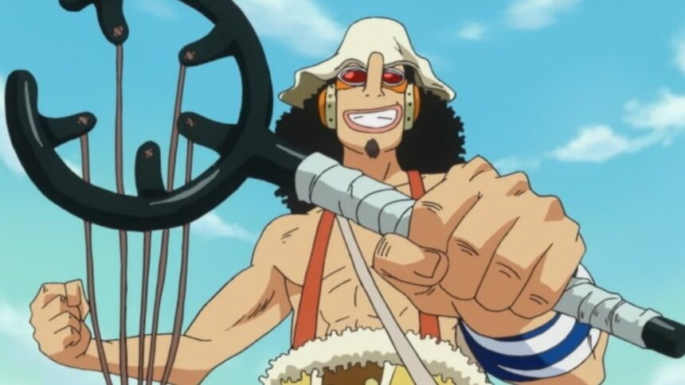
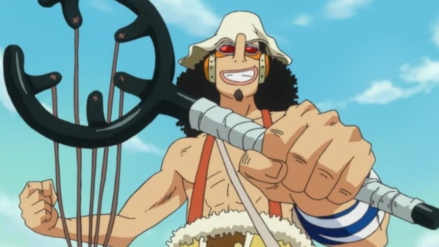

Monkey D. Luffy
Monkey D. Luffy, também conhecido como "Luffy do Chapéu de Palha" , é o fundador e capitão dos infames e poderosos Piratas do Chapéu de Palha, bem como o mais poderoso de seus melhores tripulantes. Ele deseja encontrar o tesouro lendário deixado para trás pelo falecido Gol D. Roger e assim se tornar o Rei dos Piratas, usuário da fruta “gomu gomu no mi” nome inventado pelo governo mundial cujo nome verdadeiro é Hito hito no mi : modelo deus Nika a fruta da libertação e não da borracha popularmente conhecida.
Roronoa Zoro
Roronoa Zoro, também conhecido como "Caçador de Piratas",ele é o imediato da tripulação e é o combatente dos Piratas do Chapéu de Palha. Foi o primeiro membro a juntar-se à tripulação é um mestre espadachin. Ele é um dos quatro melhores lutadores ao lado de Luffy, Sanji e Jinbe, e seu sonho é se tornar o maior espadachim do mundo. Zoro também é considerado como um dos doze piratas que são referidos como "A Pior Geração", seu estilo de luta que usa 3 espadas (Wado Ichimonji,Sandai Kitetsu e Enma) é conhecido como Santoryu.
Vinsmoke Sanji
Sanji "Perna Preta", seu verdadeiro nome é Vinsmoke Sanji, e também é o cozinheiro dos Piratas do Chapéu de Palha, assim como um antigo chefe de cozinha do Baratie. Apesar de Sanji renunciar ao seu sobrenome Vinsmoke,o Governo Mundial o rotula como parte de seu nome em seu pôster de procurado. Ele é um dos quatro melhores lutadores da tripulação, ao lado de Luffy, Zoro e Jinbe. Seu sonho é encontrar o paraíso dos chefes, All Blue, sendo esse o lugar onde o East Blue, o West Blue, o North Blue e o South Blue se encontram, juntamente com sua vida selvagem.
Usopp
Usopp conhecido como "God Usopp" é o Atirador dos Piratas do Chapéu de Palha. Ele é o quarto membro da tripulação e o terceiro a entrar. Usopp é o filho de Yasopp e Banchina. Ele nasceu e foi criado na Vila Syrup, e era o "capitão" dos Piratas Usopp e o amigo mais próximo de Kaya. Após colaborar com os Chapéus de Palha para derrotar Kuro e os Piratas do Gato Preto, ele foi convidado a se juntar à tripulação. Apesar de sua covardia normal, Usopp sonha em se tornar um corajoso guerreiro do mar como seu pai, e vive todos os dias em busca de viver à altura deste sonho.
Tony Tony Chopper
Tony Tony Chopper é uma rena. Ele é o médico da tripulação dos Piratas do Chapéu de Palha. Chopper é uma rena que, após comer a Hito Hito no Mi, adquiriu a habilidade de se transformar e raciocinar como os humanos. Ele é o sexto membro e um dos poucos membros da tripulação que nasceu na Grand Line, numa ilha chamada Drum. Por ter sido confundido como mascote, a recompensa atual é bem baixa. Mesmo sendo considerado "Mascote" pela marinha, ele foi nomeado um dos comandantes do Luffy. Seu sonho é virar um grande médico.
Nami
Nami, chamada de "Gata Ladra" é a navegadora dos Piratas do Chapéu de Palha e uma dos Oficiais da Grande Frota do Chapéu de Palha. Ela é o terceiro membro da tripulação e a segunda a entrar. Ela é irmã adotiva de Nojiko depois que as duas ficaram órfãos e foram acolhidos por Bell-mère. Ela era anteriormente um membro dos Piratas do Arlong e inicialmente se juntou aos Chapéus de Palha para poder roubá-los e comprar de volta a sua aldeia de Arlong. Ela juntou-se legitimamente aos Chapéus de Palha depois que eles derrotaram Arlong. Seu sonho é fazer um mapa de todo o mundo.
Nico Robin
Nico Robin, também conhecida como "Criança Demônio" e "Luz da Revolução", é a arqueóloga dos Piratas do Chapéu de Palha. Ela é a única sobrevivente da ilha destruída de Ohara. Como resultado, ela é atualmente a única pessoa no mundo com a capacidade de ler e decifrar Poneglyphs, uma habilidade que é considerada proibida e que ameaça o Governo Mundial. Usuaria da fruta Hana hana no mi. Seu sonho é encontrar o Rio Poneglyph, que conta a verdadeira história.
Franky
Franky, chamado de "O cyborg" é o carpinteiro dos Piratas do Chapéu de Palha. Ele foi originalmente chamado de "Cutty Flam" até trocar seu nome original por seu apelido a pedidos de Iceburg para esconder sua identidade. Franky foi permitido se juntar aos Chapéus de Palha para realizar seu sonho de criar e dirigir um navio capaz de dar a volta ao mundo, o Thousand Sunny. Ele é o oitavo membro da tripulação dos Chapéus de Palha e o sétimo a se juntar ao bando de Luffy.
Brook
Brook chamado de "Soul king" é o Músico dos Piratas do Chapéu de Palha. Ele é um esqueleto que os Chapéus de Palha encontraram a bordo de um navio fantasma depois de entrarem no Triângulo Florian. Ele é um usuário de Akuma no Mi que comeu a Yomi Yomi no Mi, o que o torna um pseudo-imortal por causa de seus poderes. Ele é o nono membro do Bando do Chapéu de Palha, e o oitavo a se juntar à tripulação de Luffy. Ele é também um dos dois Espadachins a bordo. seu sonho é cumprir a promessa que fez 50 anos atrás, quando ainda era vivo, para Laboon (baleia).
Jinbe
Jinbe chamado de "Cavaleiro do Mar" é o timoneiro dos Piratas do Chapéu de Palha. Ele é o décimo membro da tripulação e o nono a se juntar, fazendo isso durante o Arco País de Wano. Jinbe é um homem-peixe sendo um tubarão-baleia e um poderoso mestre do karatê Homem-Peixe. Seu sonho é realizar o desejo moribundo de seu ex-capitão Fisher Tiger de coexistência e igualdade entre humanos e homens-peixe.